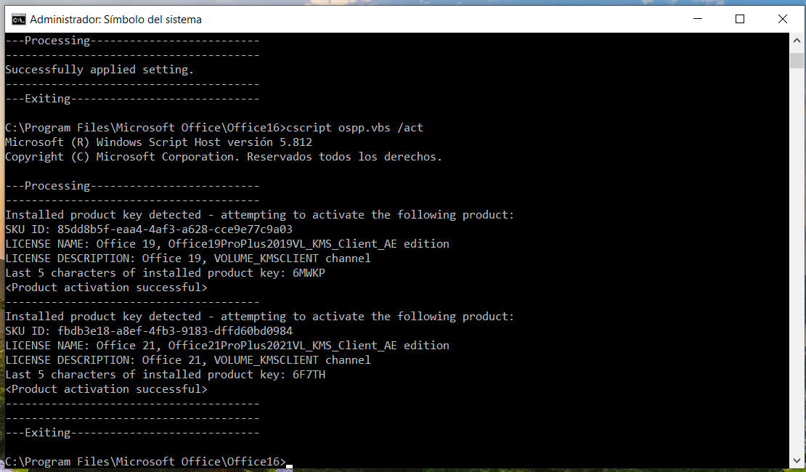
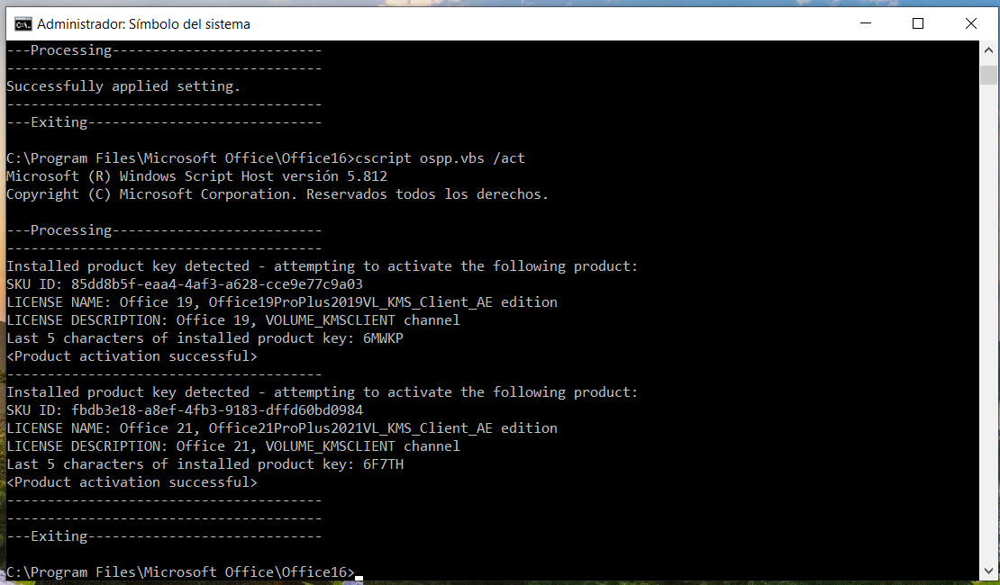

Información
En Esta Guia Aprenderas a Como Instalar y Activar Office para tu Computadora de Manera Gratuita
Todo esto sin Ayuda de Programas Externos, Basta con solo el CMD y La Carpeta para Instalar Office.
Importante:
- Si ya Tienes Office Instalado se Recomienda Borrarlo para que al Descargarlo de Nuevo Tome la Version mas Reciente.
- Se Descargara la Version LTSC (Para Empresas) pero Tendra Todas las Opciones como si Fuera el Original
Paso 1
Antes de Comenzar, Deberas BORRAR Todas las Aplicaciones Relacionas a Office.
- Word
- Power Point
- Excel
- Access
- Project
- OneNote
- Outlook
- Publisher
- Etc..
Paso 2
Una vez Eliminado Debes Descargar los Archivos Necesarios para Descargar Office 365.


Paso 3
Abrir la Carpeta, dar CLICK en la Ruta de la Carpeta y Escribir "cmd" y dar ENTER.
Paso 4
Escribir la Siguiente Linea en el CMD y Esperar a que se Instale Microsoft 365:
Copiarsetup /configure configuration.xml
Paso 5
Ahora para Activarlo, Debes Poner en el Buscador de Windows: "cmd" y Ejecutar como Administrador.

Paso 6
Colocar el Siguiente Codigo DEPENDIENDO si tu Sistema es de 32 o 64 Bits.
Copiar: 32 Bitscd C:\Program Files (x86)\\Microsoft Office\Office16
Copiar: 64 Bitscd C:\Program Files\Microsoft Office\Office16
Paso 7
Despues Poner lo Siguiente, dar ENTER y Esperar a que Termine.
Copiarfor /f %x in ('dir /b ..\root\Licenses16\ProPlus2019VL*.xrm-ms') do cscript ospp.vbs /inslic:"..\root\Licenses16\%x"
 


Paso 8
Por Ultimo Colocar el Ultimo Codigo yEesperar a que Salga como en la Imagen, Despues dar ENTER y Esperar a que Termine.
Copiarcscript ospp.vbs /setprt:1688
cscript ospp.vbs /unpkey:6MWKP >nul
cscript ospp.vbs /inpkey:NMMKJ-6RK4F-KMJVX-8D9MJ-6MWKP
cscript ospp.vbs /sethst:e8.us.to
cscript ospp.vbs /act